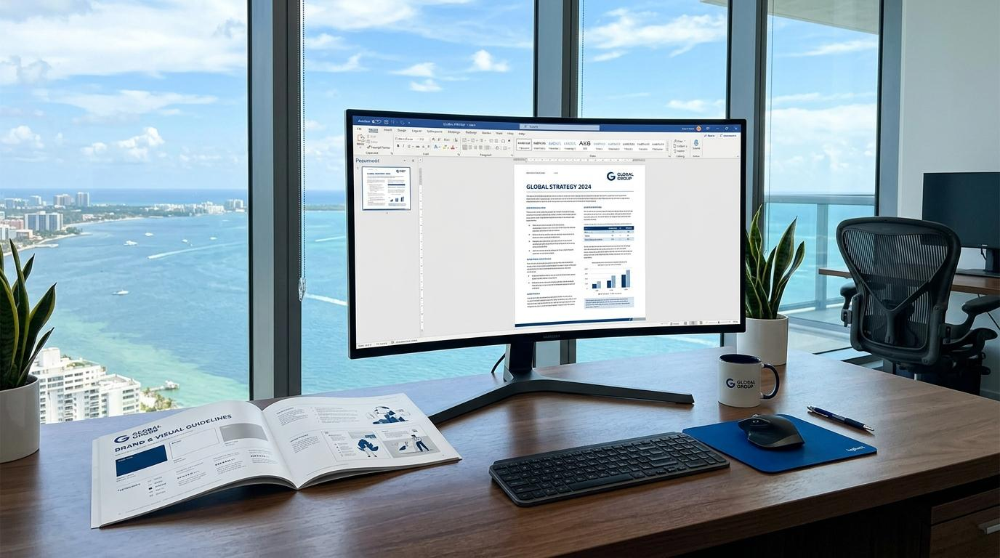

Crea informes, memorias y documentos profesionales sin pelear con el formato.
⏱ 5 minutos
🎯 Básico
📚 Pildora 5 de 10
El problema
Formatear un Word lleva casi tanto tiempo cómo escribirlo. Estilos que no cuadran, Ãndices que se rompen, tablas que se desalinean. Antigravity puede generar documentos Word ya formateados — o arreglar los que ya tienes. Tu escribes el contenido, la IA se encarga del formato.

1
Pide un documento estructurado desde cero
Describe que necesitas y Antigravity genera un Word completo con la estructura correcta.
Que ocurre:
Recibes un Word completo con Ãndice automático, tabla formateada y estructura profesional. Listo para rellenar con tus datos reales.
2
Mejora un documento que ya tienes
Arrastra un Word existente y pide que lo arregle o mejore.
Adjunto un informe que tengo a medias. Necesito que:
1. Corrijas la ortografÃa y gramática
2. Uniformices los estilos (que todos los tÃtulos sean iguales)
3. Generes un Ãndice automático al principio
4. Anadas numeracion de páginas
No cambies el contenido, solo el formato.
Que ocurre:
Tu documento vuelve limpio, uniforme y con Ãndice. Sin tocarlo tu manualmente.
3
Genera contenido para secciones vacias
Si tienes la estructura pero te faltan secciones, pide que te las rellene con borrador.
En el informe que te acabo de pasar, la sección de "Riesgos y mitigación" esta vacia. Redactame un borrador con 4 riesgos tÃpicos de un proyecto de infraestructura oceanográfica, con su probabilidad, impacto y mitigación propuesta. Formato: tabla.
Que ocurre:
Recibes una tabla de riesgos profesional que puedes adaptar a tu proyecto real. El borrador te ahorra el "sindrome de la página en blanco".
3 modos de usar Antigravity con Word
Crear desde cero — Describe estructura + estilo y recibe un Word completo
Mejorar existente — Arrastra tu doc y pide correcciones de formato/estilo/ortografÃa
Rellenar huecos — Pide borradores para secciones vacias
Consejo: Si tu equipo tiene una plantilla oficial PLOCAN, adjuntala como referencia: "Usa el formato de este documento de ejemplo para crear uno nuevo sobre X". Antigravity replica el estilo.
Acta formal
"Genera un acta de reunion con asistentes, temas tratados, acuerdos y acciones. Te paso las notas."
Carta oficial
"Redacta una carta formal de PLOCAN dirigida al Puerto de Tazacorte solicitando autorizacion de atraque."
Tabla comparativa
"Crea una tabla comparando 4 proveedores de sensores CTD: precio, precision, profundidad maxima, garantia."
Recuerda
El Ãndice automático de Word necesita actualizarse manualmente: Ctrl+A, luego F9, y selecciona "Actualizar tabla completa". Esto aplica tanto si lo generas con IA como si lo haces tu.
Te sirvio esta pildora?
Tu feedback nos ayuda a crear mejores pildoras. 30 segundos, anonimo.